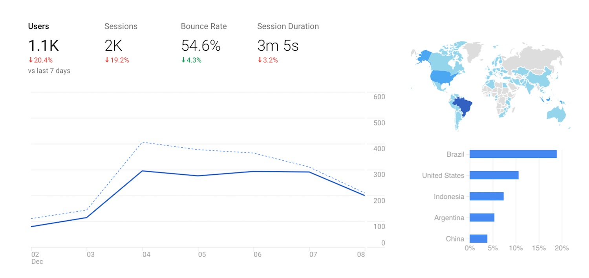
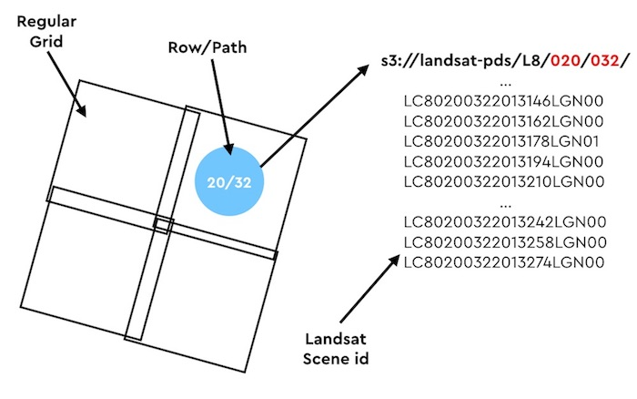

TL & DR: Using Vector tiles and AWS Lambda, we can build a really simple API to get Landsat and Sentinel images.
Stats
I'll start this blog post by giving some stats. Today, about 200 to 400 peoples will drop by RemotePixel.ca. Most of them (80%) will use Satellite Search, and spend about 3min to search for Landsat or Sentinel images.
Last month, people from no less than 101 countries have visited the web site (note: Russia is excluded because there was too many bots messing with my stats). With Brazil by far ahead of the US I should maybe think about translating RemotePixel in Português ("obrigado").
API
If you alread don't know it, most of RemotePixel project are powered by DeveloppmentSeed Sat-API. I love sat-api and most of the project I've done won't have been possible without it.
Sat-api is a complete API in front of a geospatial database (ElasticSearch) which enable to do all sort of query. The database stores information about Landsat and Sentinel data that have been acquired but doesn't know if the data have been ingested on S3. Sadly this information is crutial for most of remotepixel's projects.
While I tried to work on sat-api, I realised that project like Satellite Search or Viewer didn't need to do spatial requests. Those projects are based on Vector tiles + Mapbox-gl-js to help the user selects the Landsat or Sentinel `grid` they want images from, then I'm calling sat-api giving the grid information.
A dumb simple approach
On AWS, Landsat and Sentinel images are stored by their grid information, so it's `easy` to get the list of files for each grid selected!
The API is in fact `just a script` that list files on AWS S3! No database, No daily update, 100% up-to-date 🎉.
By default it is capable of creating some simple metadata by just parsing Landsat and Sentinel file paths (date, processing level...) and can return a more complete scene info by reading each metadata file.
The code is available on aws-sat-api repo
As of today, viewer.remotepixel.ca is fully powered by this API. But don't get me wrong, this is a really simple API that is not as powerfull as sat-api. Here are some pro/cons.
PRO
- AWS Pre and C1 Landsat collections
- True color RGB file path for Landsat-8
- Sentinel-2A and B
- No database dependency
- Always up to date
- Cheap
CONS
- No spatial query
- No complex query
- Slower (3-5 sec per request)
- AWS only
- Date: December 2017
- Category: AWS / API / Landsat / Sentinel